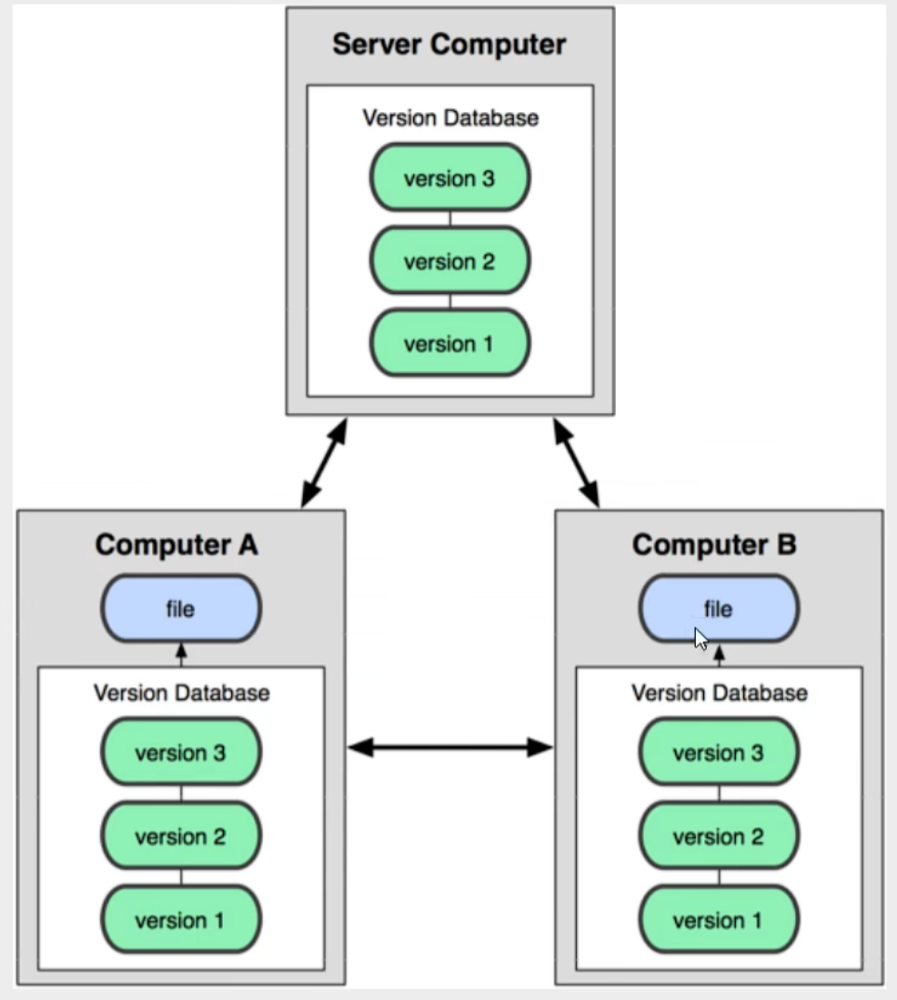
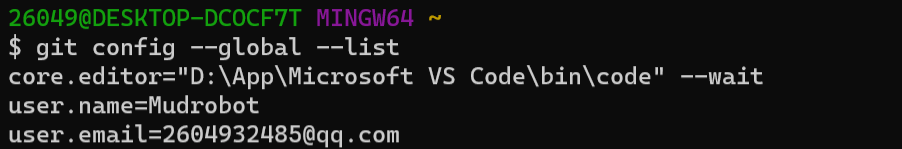
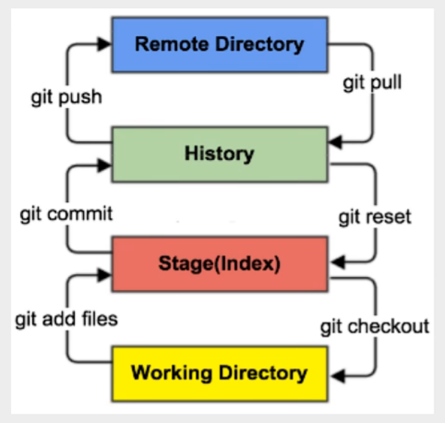
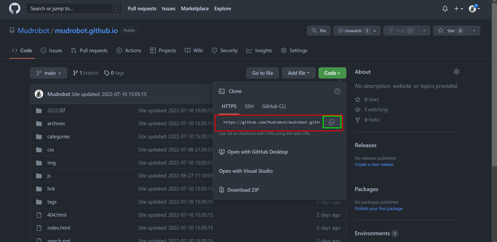
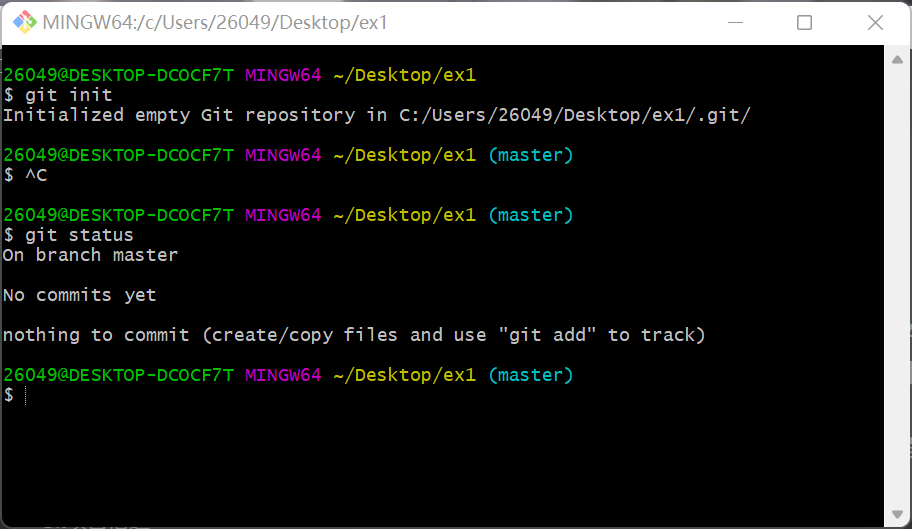
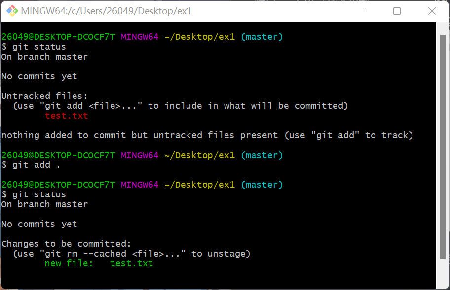
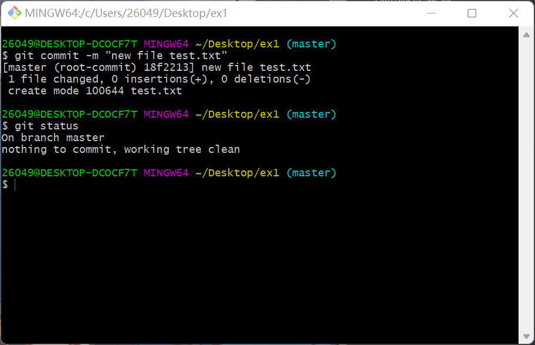
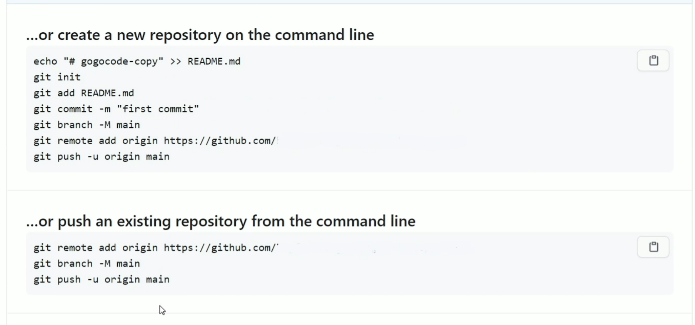
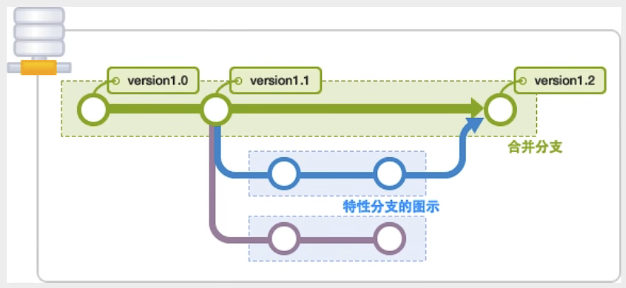

Git使用教程
分布式版本控制
每个人都拥有全部的代码！不会因为服务器损坏或者网络问题，造成不能工作的情况。
所有版本信息仓库全部同步到本地的每个用户，这样就可以在本地查看所有版本历史，可以离线在本地提交，只需在联网时push到相应的服务器或其他用户那里。由于每个用户那里保存的都是所有的版本数据，只要有一个用户的设备没有问题就可以恢复所有的数据，但这增加了本地存储空间的占用。

Git时目前世界上最先进的分布式版本控制系统。
因为Git Bash我们在日常中是使用最多的，而Git Bash基础命令风格是基于Linux系统的，所以这里我们先介绍一些基本的Linux命令
基本Linux命令
-
cd：改变目录 -
cd ..：回到上一级目录 -
pwd：显示当前所在的目录的路径 -
ls：列出当前目录中的所有文件 -
ll：同上也是列出当前目录中的所有文件，但是相比于ls列出的内容会更为详细。 -
touch：新建一个文件。eg：touch index.js就会在当前目录下新建一个index.js的文件。 -
rm：删除一个文件。eg：rm index.js就会在将当前目录下的index.js文件删除。 -
mkdir：新建一个目录，就是新建一个文件夹。 -
rm-r：删除一个文件夹，eg：rm-r src删除src目录rm -rf /切勿在Linux电脑中尝试此命令，f是递归删除的意思，这里的含义就是将根目录下的所有文件夹全部删掉。
-
mv移动文件，eg:mv index.html src命令前面的index.html文件是我们要移动的文件。src是目标文件夹，文件和目标文件夹必须在同一目录下。 -
reset：重新初始化终端/清屏。 -
clear：清屏。 -
history：查看命令历史。 -
help：帮助 -
exit：退出 -
#：表示注释
Git的必要配置
查看不同级别的配置文件
1 | # 查看系统config |
设置用户名和邮箱
1 | $ git config --global user.name "xxxxx" #用户名 |
查看用户名和邮箱

Git基本理论
Git本地有三个工作区域：工作目录（Working Directory）、暂存区（Stage/Index）、资源库（Repository或Git Directory）。如果在加上远程的git仓库（Remote Directory）就可以分为四个工作区域，文件在这四个区域之间的转换关系如下：

基本工作流程
- 在工作目录中添加、修改文件
- 将需要进行版本管理的文件放入暂存区（
git add .） - 将暂存区域的文件提交到git仓库（
git commit） - 将本地仓库推送到远程git仓库（
git push）
因此，git管理的文件有三种状态：已修改（modified），已暂存（staged），已提交（committed）
Git项目搭建
- 本地搭建仓库
- 远程克隆仓库
本地搭建仓库
- 创建一个写的仓库，我们先在git终端中使用cd命令进入我们想要创建仓库的目录，然后我们使用如下命令将一个当前目录（正常的的文件夹）初始化成git仓库
1 | # 将当前目录文件夹初始化为一个git仓库 |
- 执行后可以看到，在当前目录中多出了一个.git目录，关于版本等的所有信息都在这个目录里面。
克隆远程仓库到本地
- 使用
git clone命令将远程服务器上的仓库完全镜像一份到本地
1 | # 克隆一个项目和他的整个代码历史（版本信息） |

Git文件操作
版本控制就是对文件的版本控制，要对文件进行修改、提交等操作，首先要知道文件当前在什么状态，不然可能会提交了现在还不想提交的文件，或者要提交的文件没有提交上。
文件的4种状态
- Untracked：未跟踪，此文件在文件夹中，但并没有加入到git库中，不参与版本控制。通过
git add状态变为Staged - Unmodify：文件已经入库(history状态)，未修改，即版本库中的文件快照内容与文件夹中完全一致，这种类型的文件有两种去处，如果它被修改，而变为
Modified，如果使用git rm移出版本库，则成为Untracked文件 - Modified：文件已修改，仅仅是修改，并没有进行其他的操作，这个文件也有两个去处，通过
git add可进入Staged状态，使用git checkout则丢弃修改过，返回到unmodify状态，这个git checkout即从库中取出文件，覆盖当前修改！ - Staged：暂存状态，执行
git commit则将修改同步到库中，这时库中的文件和本地文件又变为一致，文件为Unmodify状态。执行git reset HEAD filename取消暂存，文件状态变为Modified
查看文件的状态
1 | # 查看指定文件状态 |
上传提交文件
1 | # 添加所有文件到暂存区 |
回滚
1 | # 对于尚未提交的处于暂存区中的文件，如果要撤销修改 |
下面我们举一个完整的案例，就是将一个空的文件夹初始化成一个git仓库，然后新建一个test.txt文件并将其加入到仓库中的整个过程。
我们采用本地初始化仓库的方式，首先在电脑桌面上新建文件夹ex1，然后右键该文件夹进行git bash

可以发现git init后该文件夹中多出来一个隐藏文件夹，然后我们在该文件夹下新建一个test.txt文件。
然后进入git终端，clear后执行下面的命令，结果如下图

现在我们的文件成功进入了暂存区，下面进行提交操作，结果如下

可以发现最后查看状态的时候已经显示working tree clean。所以证明提交成功！
忽略文件——.gitgnore
有些时候我们不想把某些文件纳入版本控制中，比如数据库文件，临时文件，设计文件等
这时我们可以在主目录下建立".gitgnore"文件，此文件有如下规则
- 文件中的空行或以
＃开始的行都会被忽略。 - 可以使用Linux通配符。
星号（*）代表任意多个字符，问号（?）代表一个字符，方括号（[abc]）代表可选字符范围，大括号（{string1,string2,…}）代表可选的字符串等。
- 如果名称的最前面有一个感叹号（!），表示例外规则，将不被忽略。
- 如果名称的最前面是一个路径分隔符（/），表示要忽略的文件在此目录下，而子目录中的文件不忽略。
- 如果名称的最后面是一个路径分隔符（/），表示要忽略的是此目录下该名称的子目录，而非文件（默认文件或目录都忽略）
1 | # 为注释 |
创建远程仓库
以GitHub为例，其实非常的简单，只需要跟着GitHub的步骤一步一步进行设置就可以成功创建一个仓库了。
填写好仓库名以及仓库描述后，点击创建仓库。GitHub会提供下面的代码，让你将本地的仓库关联到远端这个新创建的仓库。（关联已有仓库代码用最下面三行代码）

最常用的两个命令：
1 | # 推送当前分支最新的提交到远程 |
Git分支

Git分支中常用命令
1 | # 列出所有本地分支 |
多个分支如果并行执行，就会导致我们的代码不冲突，也就是同时存在多个版本！
如果同一个文件在合并分支时都被修改了，则会引起冲突：解决的办法是我们可以修改冲突文件后重新提交！选择要保留他的代码还是你的代码！
master主分支一般非常稳定，用来发布新的版本，一般情况下不允许在上面进行开发，工作一般情况下在新建的dev分支上工作，工作完成后，比如要发布，则可将dev分支合并到主分支master上来。
Vscode 插件推荐
- GitLens — Git supercharged
- Git History Diff
 wechat
wechat alipay
alipay